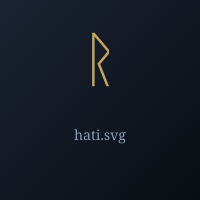

Хати
Хати (Hati) — волк, преследующий Мани
Hati
Хати ("Враг") — волк, преследующий Луну (Мани). Сын великана Mótsognir, брат Сколла. В Рагнарёке догонит и проглотит Луну, вызвав затмение.
Происхождение: Йотунхейм, род великанов
Германическое имя: Hathaz
Роль: волк, преследующий Луну
Семья
Легенды
- Хати постоянно гонится за Луной
- В Рагнарёке догонит и проглотит Луну
- Его брат Сколл делает то же самое с Солнцем
Источники
Поэтическая Эдда, Völuspá
ᚱ